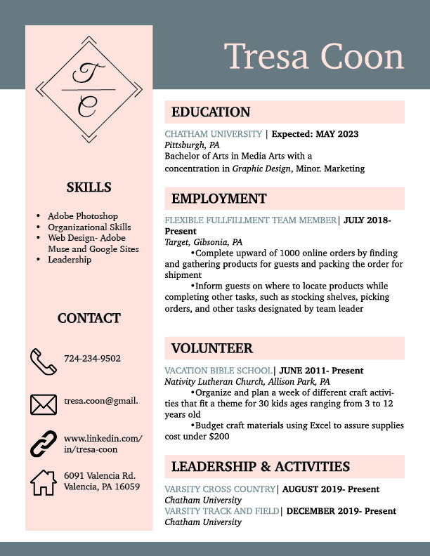

I am a graphic design student at Chatham Univeristy in Pittsburgh, PA. I describe myself as detail-oriented and highly organized. These triats reflect my work, I am interested in clean designs. It is important that my work communicates with the audience clearly and efficently.
I am a very passionate and dedicated person. As a collefiate athlete I have learned how to balance my schedule. I plan to better my skill set and put my knowledge and experience to good use in design.
Download Resume PDF
